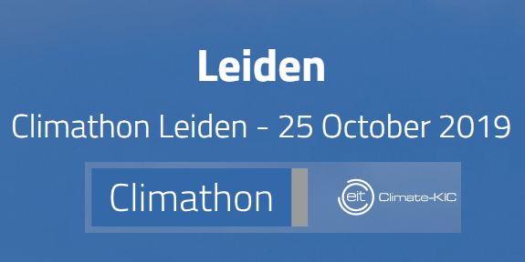

LATEST NEWS

WORKSHOP. ANALYSIS OF SATELLITE IMAGES WITH GOOGLE EARTH ENGINE: MONITORING LAND USE & LAND COVER IN THE CITY OF PALMA.
TEACHER: Mario Palacios. Civil Engineer (mariopalacios@56eo.se).
WHERE: Demarcación Baleares Colegio de Caminos. Mallorca.
WHEN: October 28th 2019. 17:00-19:30
LANGUAGE: Spanish
WHAT YOU WILL LEARN
- Pre-processing and processing of satellite data in the cloud.
- Use of GIS techniques for satellite data while implementing time series analysis.
- Implement machine learning algorithms based on satellite data.

WE JOIN THE CLIMATHON MOVEMENT AND WORK ON THE TOUGHEST CLIMATE CHALLENGE CITIES FACE TODAY.
We will show at the Climathon-Leiden how we can implement our methods using remote sensing data to target urban green spaces in cities. We uncover the richest value of green spots.